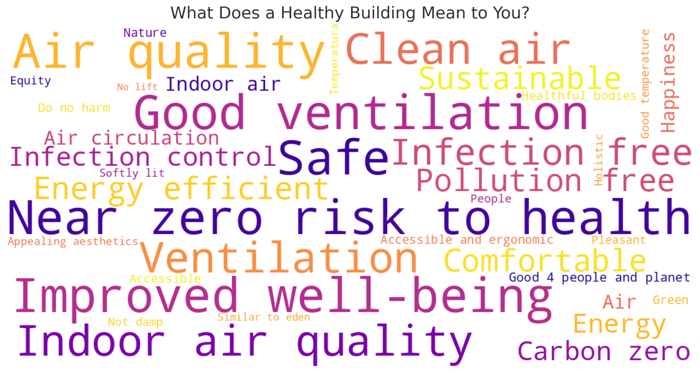

When we first envisioned the Healthy Buildings Network, our understanding of what constitutes a healthy building revolved around core principles of sustainability, air quality, comfort, and safety. We focused on measurable factors: ventilation efficiency, pollutant-free environments, energy efficiency, thermal comfort, and the physical and mental health benefits these elements offer to occupants.
However, we knew our vision could only be complete by incorporating the voices of the people who live, work, and thrive in these environments. At our recent launch event, we asked participants: "What does a healthy building mean to you?"
Our Initial Framework
Their responses, beautifully captured in a collaborative word cloud, expanded our vision significantly. Participants emphasized aspects beyond just physical health—highlighting happiness, equity, holistic well-being, and accessibility. They spoke passionately about buildings as places that should have near-zero risks to health, be infection-free, softly lit, and aesthetically pleasing. Sustainability became more nuanced, with emphasis on buildings being "good for people and planet" and "carbon zero."

One particularly inspiring theme was the participants' desire for spaces akin to nature—environments that feel "similar to Eden," integrating natural elements, fresh air, and clean ventilation to nurture both body and mind.
Expanding Our Understanding
The launch event's insights taught us that healthy buildings are not just about technical specifications but deeply about human experiences and interconnectedness with our surroundings. Let's explore some of the key themes that emerged:
1. Holistic Well-being
Participants stressed that a truly healthy building must support both physical and mental well-being. This means creating spaces that reduce stress, promote positive emotions, and foster social connections—not just spaces that meet technical air quality or thermal comfort standards.
2. Biophilic Elements
The connection to nature emerged as a powerful theme. Participants described healthy buildings as those that incorporate natural elements, from materials and textures to views and greenery. This reflects growing research on biophilic design and its significant impact on occupant wellness.
3. Equity and Accessibility
A healthy building must be accessible to all, regardless of ability, age, or background. This inclusive approach challenges us to think beyond standard compliance toward genuinely equitable design that serves diverse communities and needs.
4. Beyond Carbon Zero
While sustainability remains crucial, participants expanded this concept to include buildings that actively contribute to both environmental and social welfare—buildings that give back to communities and ecosystems rather than merely reducing harm.
"The most striking insight from our launch event was how participants envisioned healthy buildings not just as physical structures but as living environments that nurture the whole person—spaces that feel 'similar to Eden,' where people can truly thrive."
We are excited to integrate these invaluable insights into our ongoing mission. The diverse perspectives shared at our launch event will help shape our research priorities, event topics, and collaborative projects moving forward.
Join the Conversation
We invite you to explore the word cloud and see how your voice resonates with others in shaping healthier, happier, and more holistic building environments. What does a healthy building mean to you? How does your perspective align with or differ from those captured at our launch event?
Share your thoughts with us on LinkedIn or by contacting us directly. Your insights will help continue to shape and expand our understanding of what truly makes a building healthy.